Machine Learning in Medicare Fraud Detection
Findings
Applying xgboost to classify Part B Medicare providers as fraud/no fraud yielded similar results to those published in a recent academic journal article. (.95+ AUC score). The method’s benefits include small file sizes, simple implementation, and high predictability.
Outline
- Basics
- Article
- Project
- Findings
- Implications
- Directions?
Basics
- Classification vs. Regression
- Identifiers, Predictors, & Outcomes
- Train –> Test –> Predict
ROC Curve

Wikipedia
Confusion Matrix
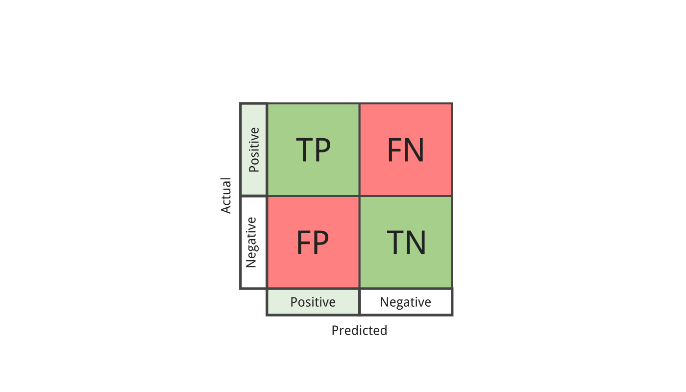Classification Performance Metrics[1]
- Accuracy - The percent (or proportion) of cases classified correctly.
- Sensitivity - The percent of all 1s that are correctly classified as 1s.
- Specificity - The percent of all 0s that are correctly classfied as 0s.
- Precision - The percent of predicted 1s that are actually 1s.
Class Imbalance
- Medicare Fraud 6+ per 10k
- Undersampling or Downsample
- Oversampling or Up/Down Weighting
- Data generation
Article[2]
Flow
Claims Data
Provider Data
LEIE
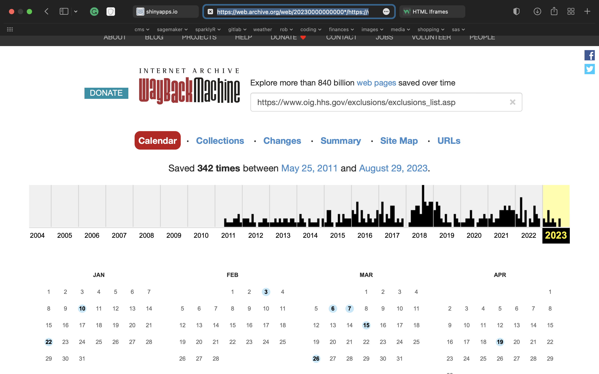AUC Scores
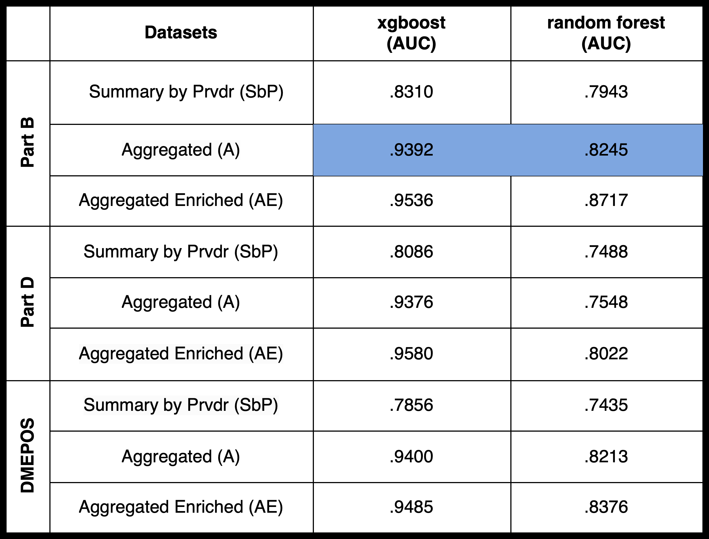xgboost
- available in all major computer languages
- stochastic gradient boosting is the most general and widely used
- “can lead to unstable models due to overfitting.”
- “daunting array of hyper parameters”
- high accuracy, poor interpretability
- winning solution for Higgs Machine Learning Challenge
Random Forest
- Original conception in 2004
- In 2014, RF took 3 of 5 top spots.
- In 2017, ranger package released in R.
- In 2017, ranger was fastest implementation in R.
Top 20 Model Features
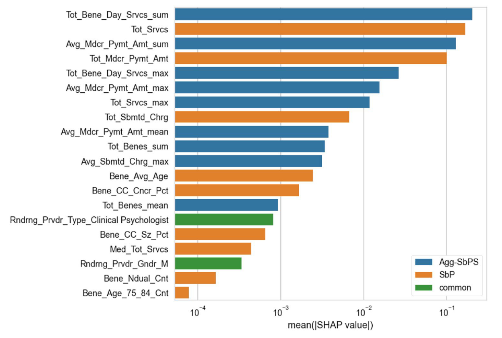Project
- 5.4m rows (5yrs X 1.1m prvdrs)
- 46 variables
- 117 lines for wrangle
- Corpus 50k fraud + random
- Train 37,500 / Test 12,500
- 3 models (xgboost, random forest, log. reg)
- Random undersampling 4:1
- Hyperparameters Tuned
Feature Creation
Merge with LEIE
XGBoost Tuning Parameters
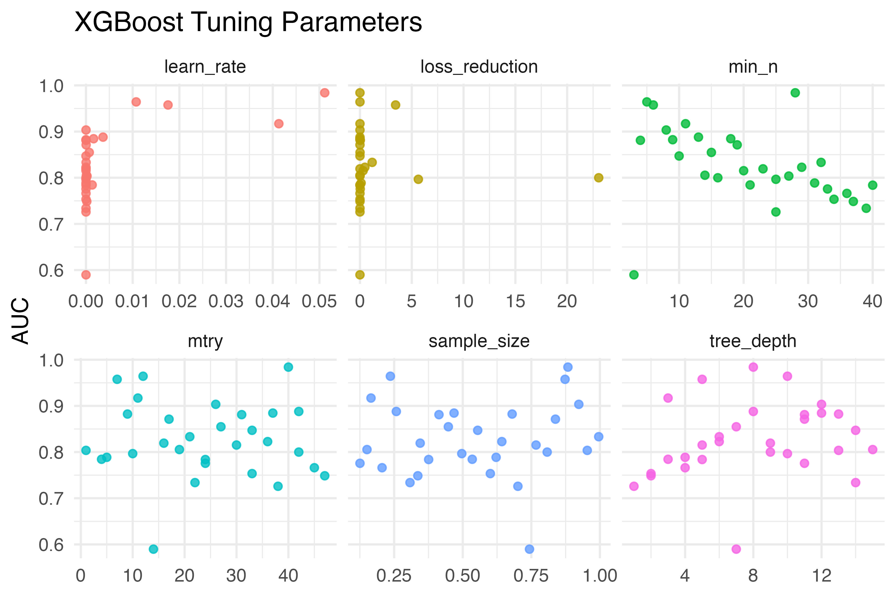VIP
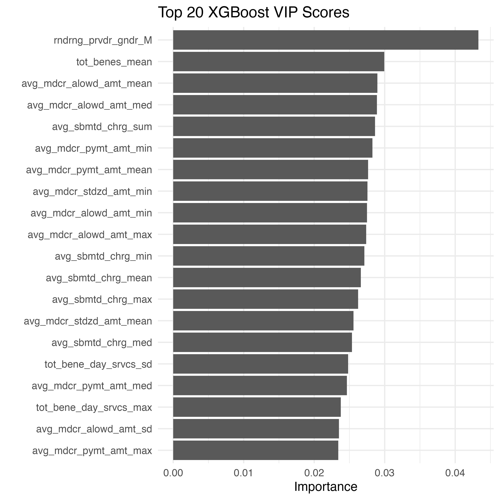
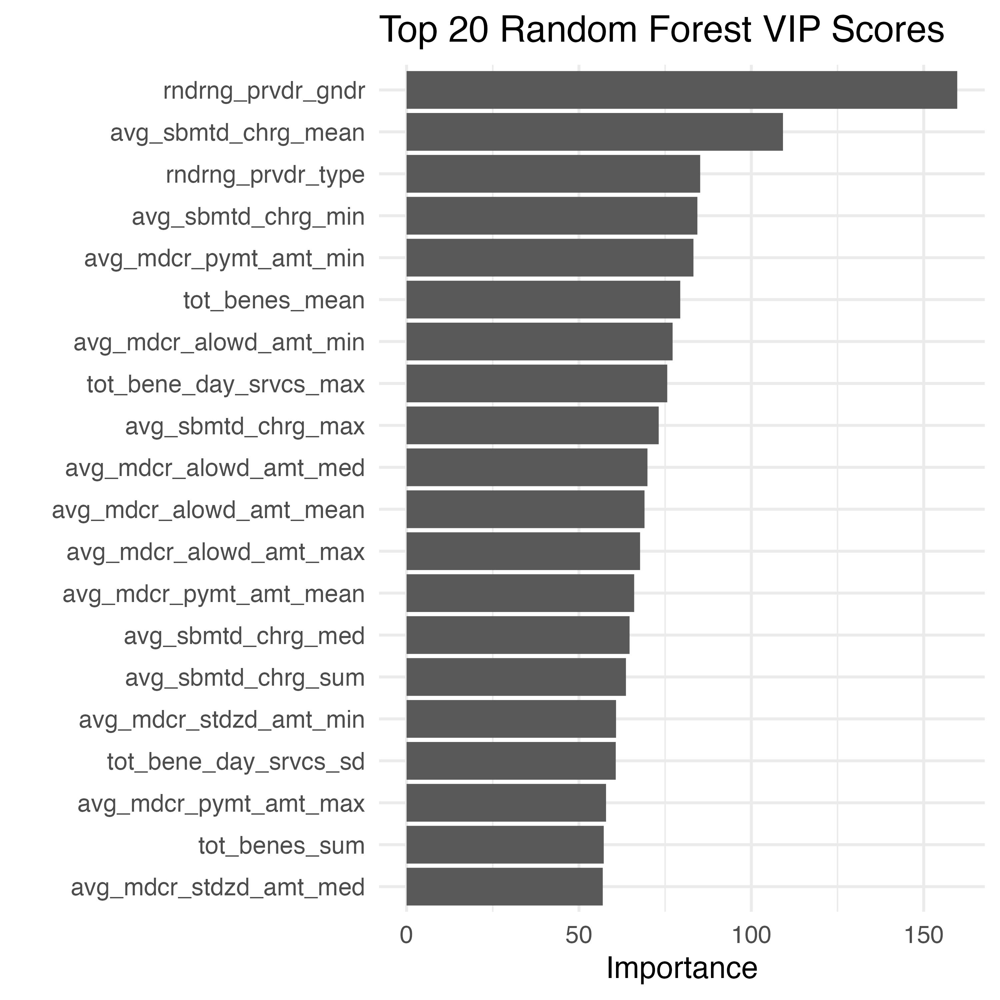
XGBoost Confusion Matrix
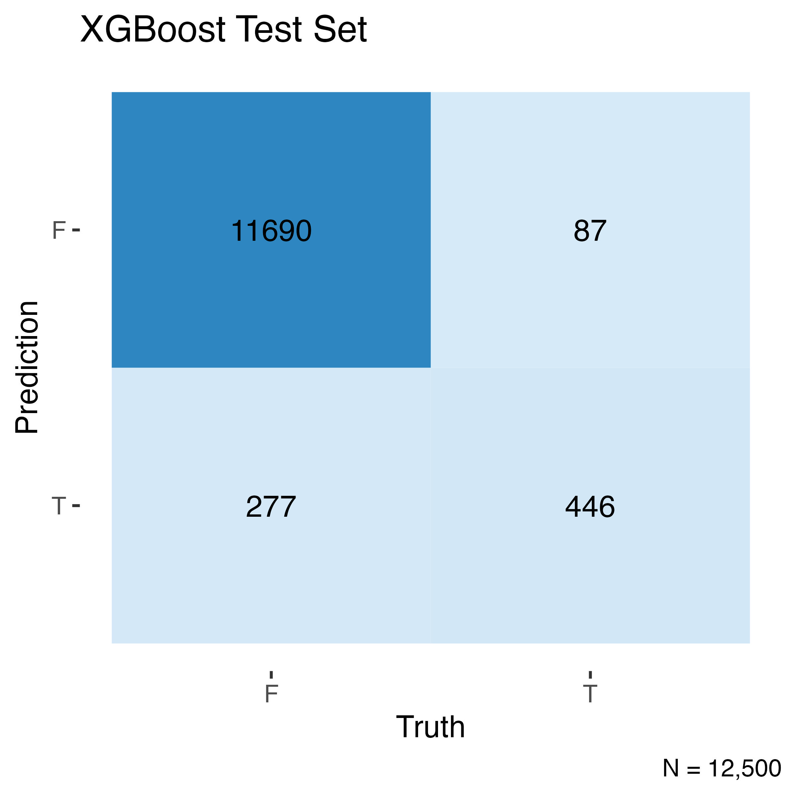
- AUC = .981
- Accuracy = .971
Random Forest Confusion Matrix
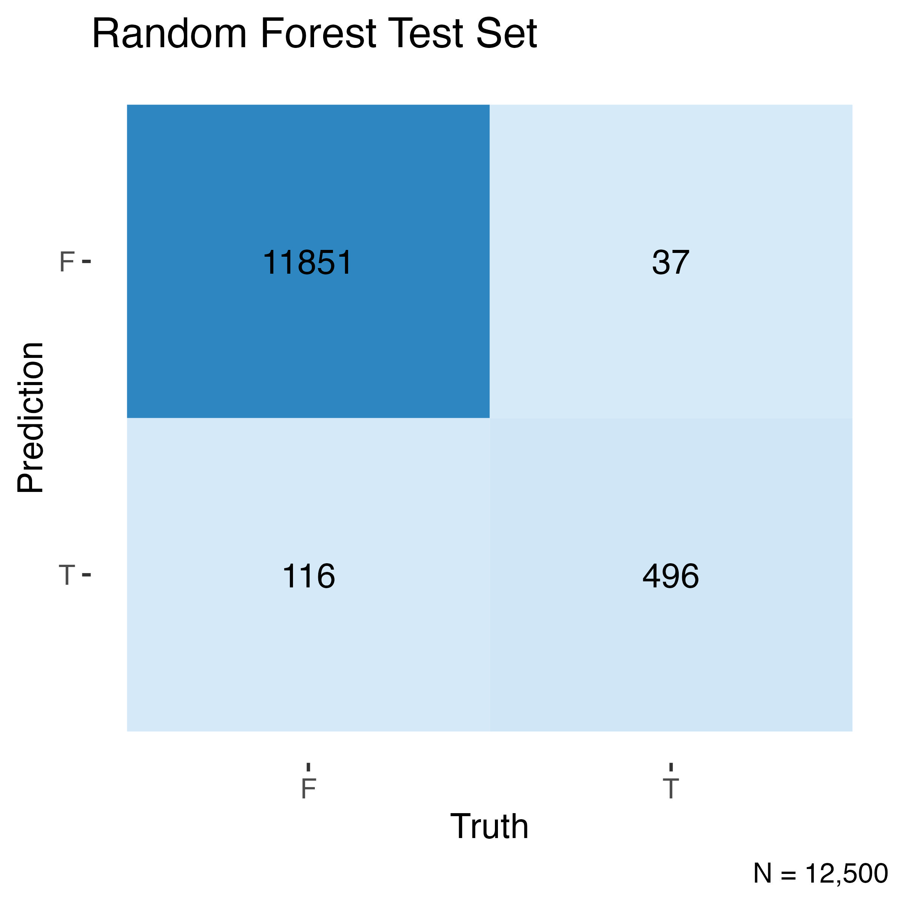
- AUC = .991
- Accuracy = .988
Log. Reg Confusion Matrix
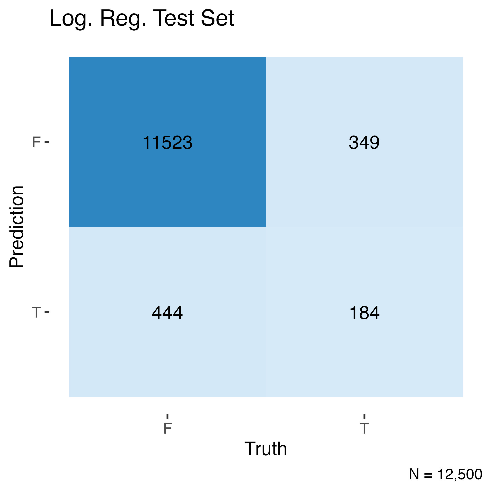
- AUC = .937
- Accuracy = .826
ROC curve
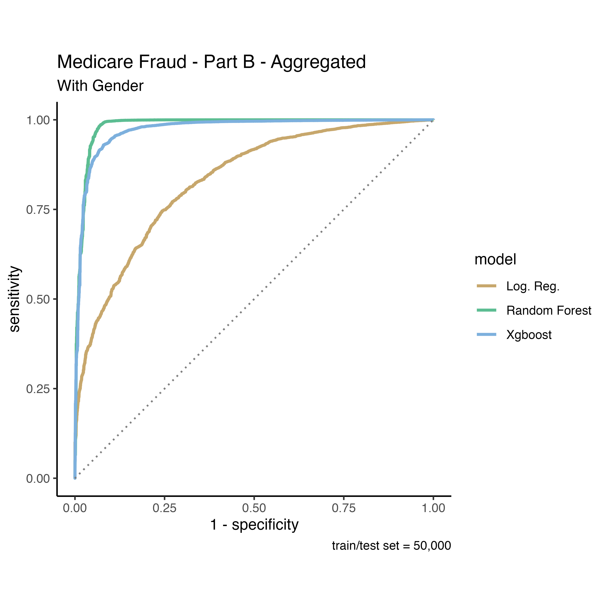Fairness
To help ensure algorithm fairness, some advocate three constraints: “(1) no use of legally protected features, such as race, ethnicity, and gender; (2) equal rates of “positive” decisions across groups; and (3) equal error rates across groups.” While appealing, the suggestions “often worsen outcomes for individuals in marginalized groups, and can even leave all groups worse off.”[3]
Application
Value Adds
- timeliness (monthly?)
- accuracy (MED for labels)
Verification
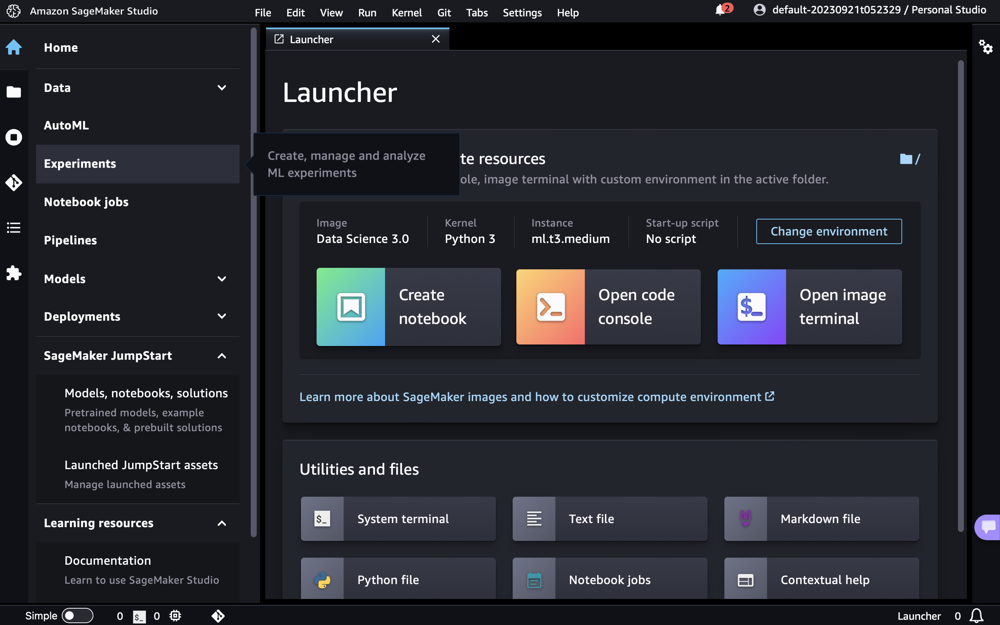Bibliography
[1]
P. Bruce and A. Bruce, Practical Statistics for Data Scientists: 50 Essential Concepts. "O’Reilly Media, Inc.", 2017.
[2]
J. M. Johnson and T. M. Khoshgoftaar, “Data-Centric AI for Healthcare Fraud Detection,” SN Computer Science, vol. 4, no. 4, p. 389, May 2023, doi: 10.1007/s42979-023-01809-x.
[3]
A. Chohlas-Wood, M. Coots, S. Goel, and J. Nyarko, “Designing equitable algorithms,” Nature Computational Science, vol. 3, no. 7, pp. 601–610, Jul. 2023, doi: 10.1038/s43588-023-00485-4.
[4]
T. Chen and C. Guestrin, “XGBoost: A Scalable Tree Boosting System,” in Proceedings of the 22nd ACM SIGKDD International Conference on Knowledge Discovery and Data Mining, in KDD ’16. New York, NY, USA: Association for Computing Machinery, Aug. 2016, pp. 785–794. doi: 10.1145/2939672.2939785.
[5]
M. Fernández-Delgado, E. Cernadas, S. Barro, and D. Amorim, “Do we need hundreds of classifiers to solve real world classification problems?” The Journal of Machine Learning Research, vol. 15, no. 1, pp. 3133–3181, Jan. 2014.
[6]
S. B. Starr, “Evidence-Based Sentencing and the Scientific Rationalization of Discrimination,” Stanford Law Review, vol. 66, no. 4, pp. 803–872, 2014, Accessed: Sep. 30, 2023. [Online]. Available: https://www.jstor.org/stable/24246717
[7]
J. K. Tay, B. Narasimhan, and T. Hastie, “Elastic Net Regularization Paths for All Generalized Linear Models,” Journal of Statistical Software, vol. 106, pp. 1–31, Mar. 2023, doi: 10.18637/jss.v106.i01.
[8]
M. N. Wright and A. Ziegler, “Ranger: A Fast Implementation of Random Forests for High Dimensional Data in C++ and R,” Journal of Statistical Software, vol. 77, pp. 1–17, Mar. 2017, doi: 10.18637/jss.v077.i01.
[9]
C. Yang and W. Dobbie, “Equal Protection Under Algorithms: A New Statistical and Legal Framework,” Michigan Law Review, vol. 119, no. 2, pp. 291–396, Nov. 2020, doi: 10.36644/mlr.119.2.equal.